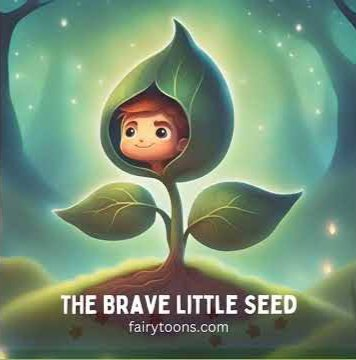

In a quiet village near a green forest lived a small seed named Lumo. He was tiny and brown, but inside him was a big dream. All the other seeds stayed inside a wooden box because they were afraid. But Lumo believed something different. One sunny morning, the gardener picked Lumo and gently planted him into the soil.
The Brave Little Seed
An inspiring tale of courage and growth

Lumo the brave little seed
🌱 The Beginning ▼
💧 Growing with Courage ▼
Days passed quietly under the soil. Lumo felt the soft drops of rain and the warmth of the sun. Slowly, he began to grow. It was not easy, but Lumo kept trying. Finally, one bright morning, he pushed through the soil and saw the sky for the first time. "The world is beautiful!" Lumo said happily.
🌼 The Bloom ▼
A bright golden flower bloomed at the top of Lumo's stem. The other seeds in the box saw Lumo and realized that being brave could lead to wonderful things. Soon, many new plants started growing in the garden.
Moral: Sometimes courage is the first step toward something beautiful.
🌟 Moral of the Story
"Sometimes courage is the first step toward something beautiful."
Even the smallest seed can grow into something beautiful when it has the courage to try.
📝 Story Quiz
What was the name of the brave little seed?